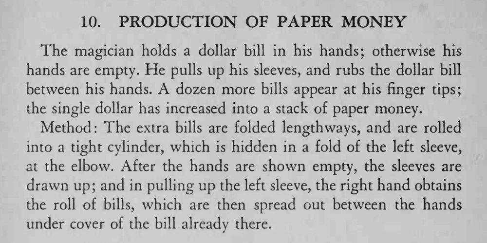

魔术师把一张美元在两手间一搓，指尖上多出一小叠纸币，一张变成了十几张。
拉袖子的动作要自然，取纸卷时别让袖口鼓起。

The magician holds a dollar bill in his hands; otherwise his hands are empty. He pulls up his sleeves, and rubs the dollar bill between his hands. A dozen more bills appear at his finger tips; the single dollar has increased into a stack of paper money. Method: The extra bills are folded lengthways, and are rolled into a tight cylinder, which is hidden in a fold of the left sleeve, at the elbow. After the hands are shown empty, the sleeves are drawn up; and in pulling up the left sleeve, the right hand obtains the roll of bills, which are then spread out between the hands under cover of the bill already there.